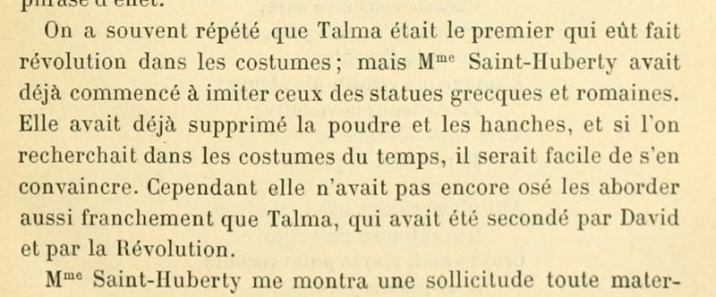

Mme Saint-Huberty before Talma (ch. III, p. 95)
French: Ginisty edition, ch. III, p. 95, scan n104. The chapter’s summary includes “Le salon de Mme Saint-Huberty. — Ses succès.” Highlighted: what Lecky’s note reports.

It has often been said that Talma was the first to make a revolution in costume; but Mme Saint-Huberty had already begun to imitate the costumes of the Greek and Roman statues. She had already given up powder and hip-pads, and anyone who looked into the costumes of the time could easily satisfy himself of it. Still, she had not yet dared to take them up as boldly as Talma, who had been seconded by David and by the Revolution.
Translation: this edition’s draft. “Les hanches”: the padding worn at the hips under eighteenth-century stage dresses.
Original French
On a souvent répété que Talma était le premier qui eût fait révolution dans les costumes; mais Mme Saint-Huberty avait déjà commencé à imiter ceux des statues grecques et romaines. Elle avait déjà supprimé la poudre et les hanches, et si l’on recherchait dans les costumes du temps, il serait facile de s’en convaincre. Cependant elle n’avait pas encore osé les aborder aussi franchement que Talma, qui avait été secondé par David et par la Révolution.
Lecky (vol. II, ch. V, note 138): “The first step, according to Madame Fusil (Souvenirs d’une Actrice, pp. 27–54), in this direction was taken by an actress named Madame Saint-Hubert, who discarded powder and took the ancient sculptures as her model; but it was the genius of Talma, warmly seconded by the antiquarians, by the revolutionists, and especially by the Girondins, that finally vanquished the prevailing prejudice.” The David and the Revolution of Lecky’s text and note are already in Fusil’s sentence; the antiquarians and the Girondins are not on this page.
Further down the rabbit hole
Sources that Lecky cites in the notes next to the ones that cite this page.
- Vitet, Études sur l’histoire de l’artWhy the saints in Rome’s mosaics grew ugly: Lecky blames the monks, his source blames the barbarians
- Rousseau, Du contrat socialWhy civil and theological intolerance cannot be split
- Allen, Inquiry into the Rise and Growth of the Royal PrerogativeAn oath of non-resistance that outlived the Revolution by some thirty years
- An Homily against Disobedience and Wilful RebellionHell as the prison of rebels: the Church of England preaches obedience
- Aquinas, Summa theologiae, II-IIHeretics and forgers; the usurper’s subjects
- Ayala, De jure et officiis bellicisAnyone may kill a usurper, not a lawful prince


Backlinks
Every place in Rationalism in Europe that links to this page (generated automatically when the site is built).
- Chapter V: note 138